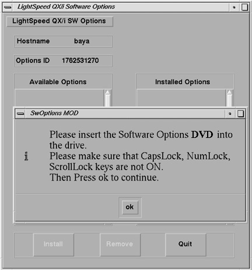
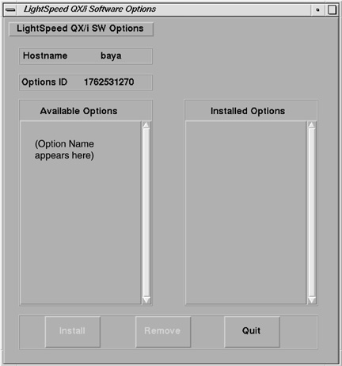

Operating Documentation
Direction 5167277-800, Rev# 8
5167277-800 - FX/Xtream SW & Upgrade Procedures
Operating Documentation |
Pathfinder system upgrade.
Software Options must be loaded/re-loaded every time the OC software is reloaded.
In Service Desktop, select [TOOLBOX/Utilities] -> [Install] -> [Install Options] .
This program must be run once for each option DVD you are loading. For example, if you have two options DVDs you must run this program twice.
An Options Window appears (see illustration below).

Insert the Options DVD into the drive
Click on [OK]
An example Software Options Available/Installed screen is shown below.

Select the option to be installed (click to highlight the option, then release).
Click on the [Install] button.
A box may appear while the options are loading
When the option is displayed in the “Installed Options” list, then installation of that option is complete. Note that some options take a fraction of a second to install, while options like 3D may take a half a minute (due to the fact that they are installing software).
After the option is installed, select [Quit] , then [OK] .
Remove the DVD.
If you have another option DVD to load, go back to step 1.
Go to the [Service Desktop] -> [Utilities] -> [Applications Shutdown] .
After Applications have shut down, open the console window, or a UNIX shell window, type st<Enter> to start up applications.
When the system applications return, the system is ready to use.